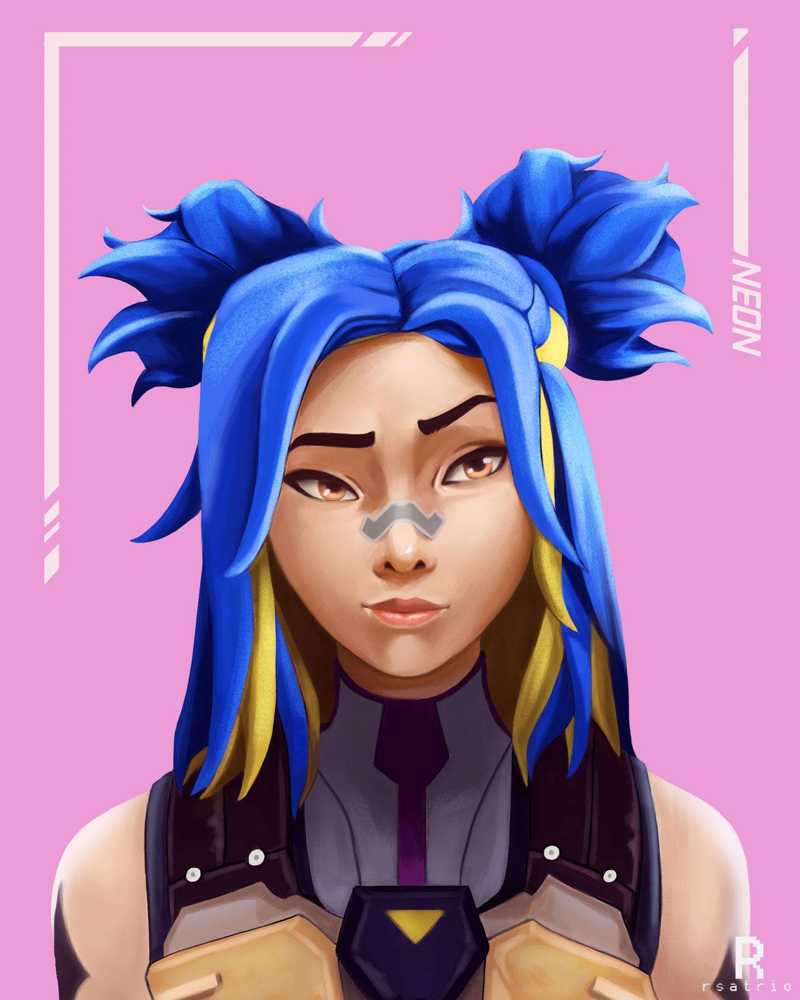

¿Quién es Neon?
La agente filipina, Neon, avanza a velocidades impactantes, descargando ráfagas de energía bioeléctrica tan rápido como su cuerpo la genera. Se adelanta velozmente a sus enemigos para atraparlos desprevenidos y luego los fulmina más rápido que un rayo.
Cumple el rol de duelista en el protocolo Valorant.
LORE
Pasado de Neon
Antes de que Neon se uniera al Protocolo VALORANT, ella estaba involucrada tanto en el trabajo de su madre como del padre, así como en K-SEC, una subsidiaria de Reino. Se sabe que el padre de Neon es un creador de tecnologías de soporte radiantes que ayudan a los radiantes de todo el mundo a controlar sus poderes. El catalizador para que el padre de Neon siguiera este camino esencialmente comenzó con él desarrollando un Protector de sobretensiones para ayudar a Neon a controlar sus turbulentos y potentes poderes bioeléctricos. La madre de Neon fue parte de un esfuerzo por reducir la corrupción en Manila, aunque no se sabe si Neon estuvo involucrado. Más tarde, se sabe que Neon comenzó a trabajar para K-SEC, aunque no se especifica cuáles eran sus responsabilidades. Aquí es donde se conoció Cámara, sobre quien finalmente formó una opinión negativa. Aunque azufre también es un ex empleado de K-SEC, se supone que no se han conocido antes del Protocolo VALORANTE. Esto puede significar que no eran parte de la organización simultáneamente o que K-SEC es demasiado grande para que los empleados conozcan a todos sus colegas.
En el tiempo previo al reclutamiento de Neon, Killjoy estaba en el proceso de crear un teleportal a Omega Earth después de que la Cámara proporcionara planos para los portales vistos en Fractura. Estaba teniendo problemas para encontrar una fuente de energía adecuada para su teletransportador antes de que la Cámara recién reclutada interviniera y dijera azufre sobre Neon, afirmando que no puede comunicarse con ella directamente debido a un pasado "malentendido", pero que se reuniría con Brimstone ya que él es un veterano de K-SEC. Neon fue reclutado pronto a partir de entonces, tanto como recluta en combate como fuente de energía para el teleportal.